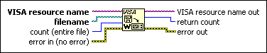

VISA Write From File Function
Owning Palette: VISA Advanced VIs and Functions
Requires: Base Development System
Takes data from the file specified by filename and writes it to the device synchronously.
filename opens in binary mode and the function reads the amount of data specified by count. The data is then written to the device. This operation returns only when the transfer terminates.

 Add to the block diagram Add to the block diagram |
 Find on the palette Find on the palette |